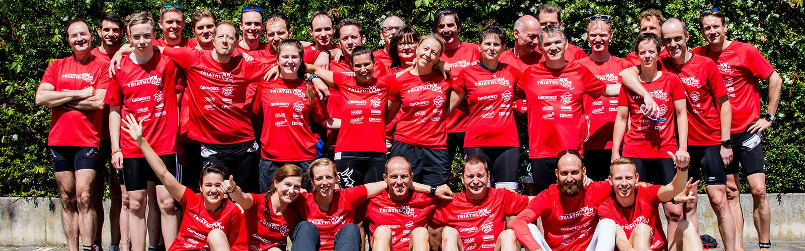

Wer 1. FC Kaiserslautern hört, denkt erstmal an Fußball. Doch der Pfälzer Traditionsverein hat noch viel mehr zu
bieten. Auch in den Abteilungen steckt Herzblut... so auch in unserem Triathlon-Team.
Einst hervorgegangen aus der Leichtathletikabteilung des 1. FC Kaiserslautern, umfasst unser Team heute rund 100
aktive und passive Mitglieder. Ob Sprint, Kurz, Mittel oder Lang - in unseren Reihen gibt es Starter auf allen
Distanzen - auch einige Hawaii-Finisher. Der Weg bis hinter die Ziellinie wird begleitet von hartem Training,
Disziplin und viel Schweiß... und von unserem Trainerteam, das mit Rat und Tat zur Seite steht.
Die neue Saison steht vor der Tür. Wir freuen uns auf spannende Wettkämpfe, sportliche Begegnungen mit unseren
Mitstreitern aus anderen Teams, neue Mitglieder und über jeden, der uns anfeuert und unterstützt. Wir sehen uns!
Abteilungsleitern

stellvertretender Abteilungsleiter, Jugendwart
Kassenwart
Sportlicher Leiter
Pressewart
Materialwart
Beisitzer
Peter Holy, Steffen Höfs, Dr. Christopher Girke